Татьяна очень аккуратный мастер. Очень доброжелательная девушка. Всё стерильно. В студии очень уютно.
Кира Н., 4 ноября 2026, 2ГИС
Маникюр с покрытием, педикюр и SPA для рук на Белинского. Аккуратно, стерильно, большая палитра оттенков, а мастер поможет выбрать цвет.
5,027 оценок в 2ГИС
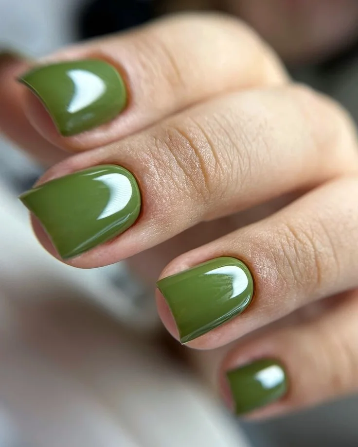
1 800 ₽маникюр
с покрытием
Палитра
Нажмите на кружок и посмотрите, как этот цвет выглядит на ногтях. На всех фото работы студии.
Оттенки собраны по работам из карточки 2ГИС. В студии палитра больше, мастер подберёт тон под кожу.
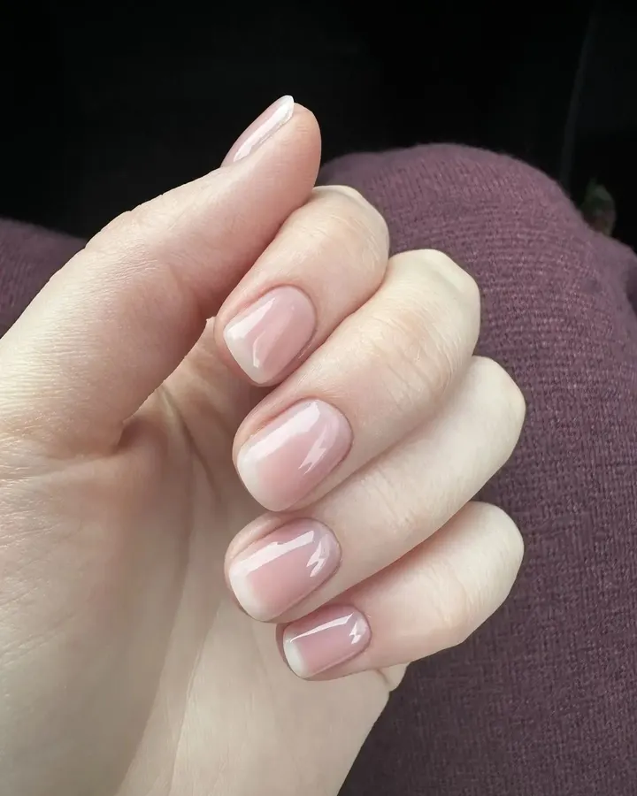
Цены
Цена и примерная длительность, чтобы сразу понимать, сколько займёт визит.
Цены и длительность с онлайн-записи студии в DIKIDI, 28.11.2026.
Работы
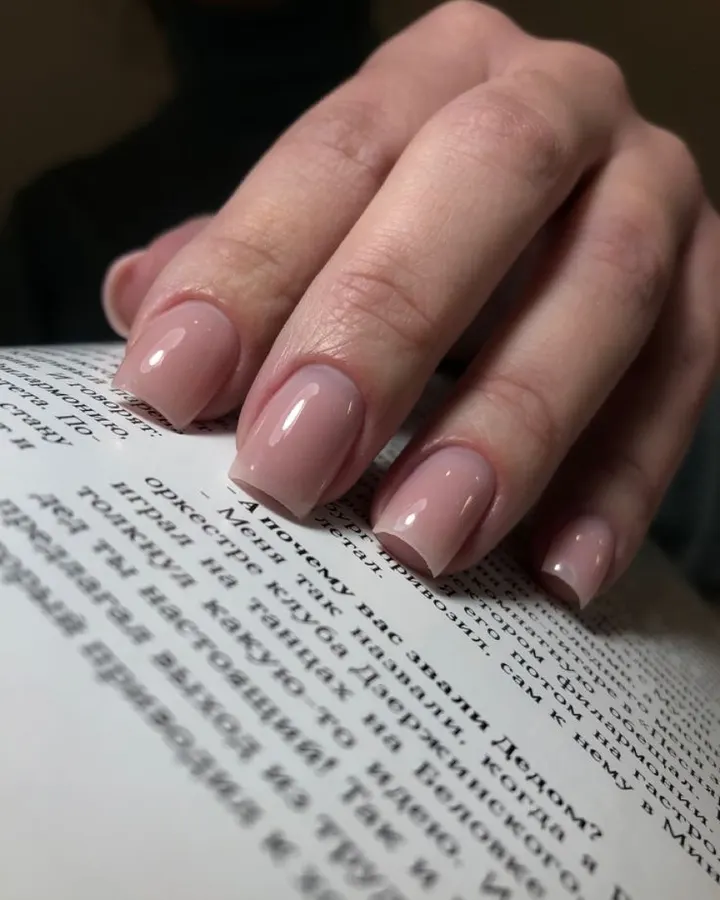
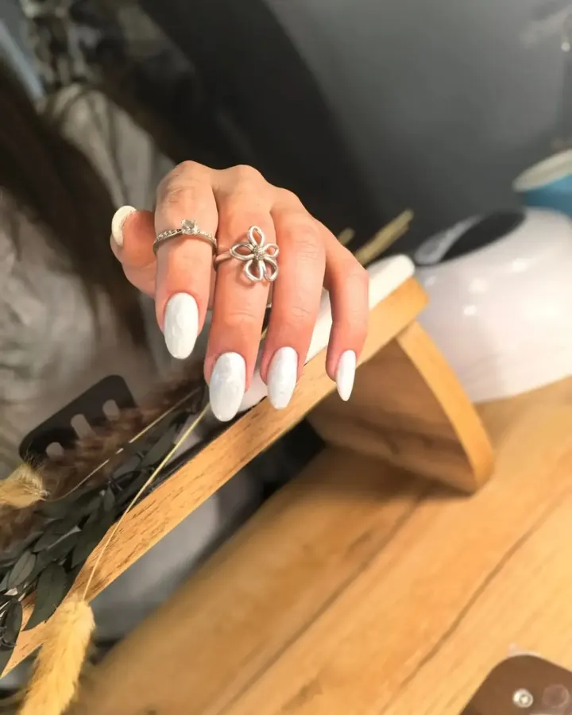
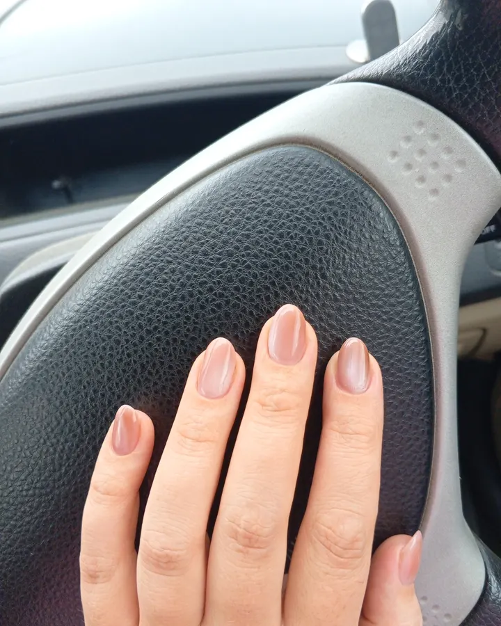
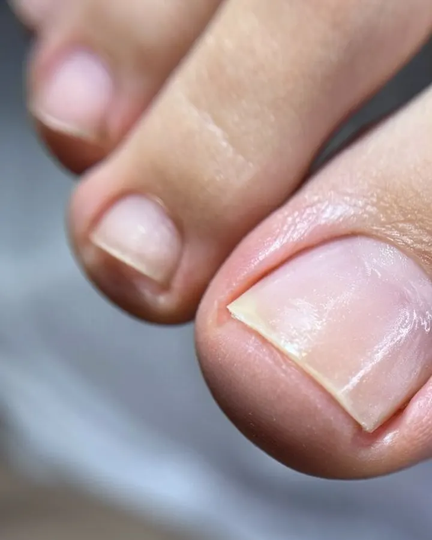
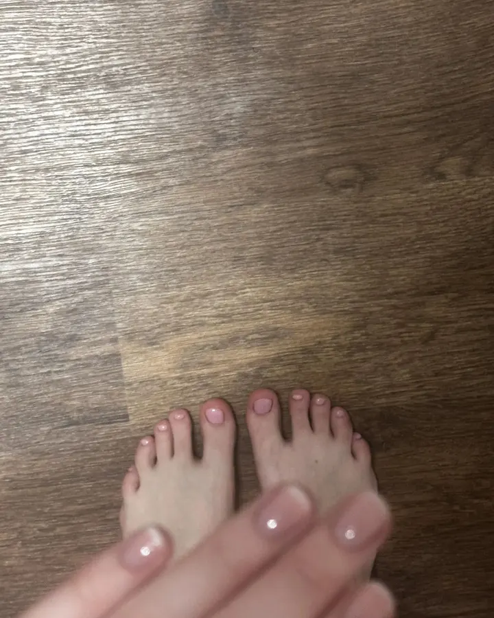
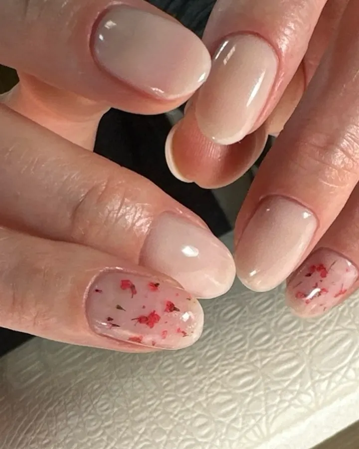
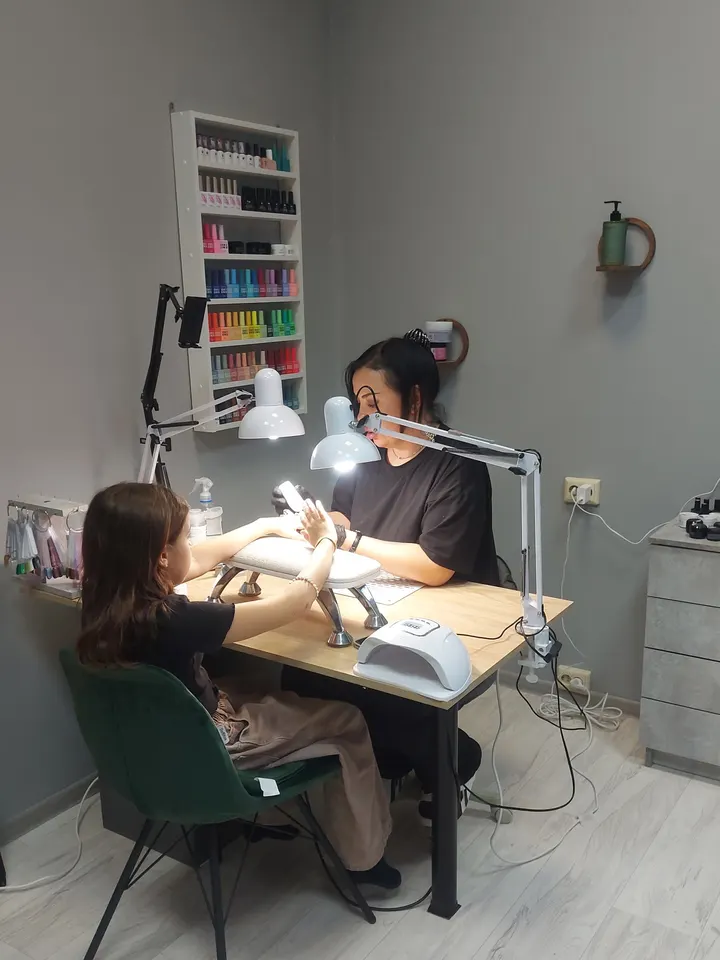
Мастер
О чём чаще всего пишут в отзывах в 2ГИС:
Отзывы
27 оценок, 25 отзывов. Несколько из них, коротко.
Татьяна очень аккуратный мастер. Очень доброжелательная девушка. Всё стерильно. В студии очень уютно.
Кира Н., 4 ноября 2026, 2ГИС
Обратилась на педикюр с проблемной стопой, вышла от мастера довольная работой. Всё было сделано на высшем уровне.
Ксения Ч., 3 ноября 2026, 2ГИС
Понравилась возможность быстрой записи, день в день. Мастер осторожна и внимательна, стоимость процедур приятная.
Евгения Д., 21 октября 2026, 2ГИС
Мастер внимательный и вежливый, помогает в выборе цветовой гаммы. Рекомендую посещать эту студию.
Анна З., 10 октября 2026, 2ГИС
Запись
Запись идёт через ваш DIKIDI, как сейчас: ничего менять не нужно.
Как найти
Томск, улица Белинского, 60/1
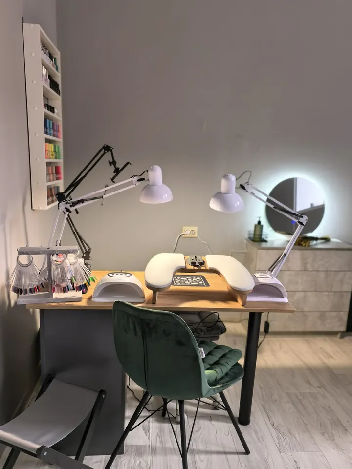
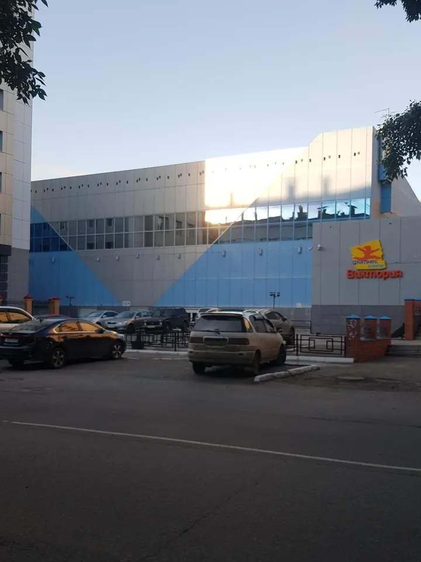
Вопросы
Маникюр с покрытием гель-лак или гель 1 800 ₽, около 1 ч 45 мин. Гигиенический маникюр от 1 100 ₽. Снятие гель-лака 200 ₽.
Да: педикюр пальчики с покрытием 1 800 ₽, полный педикюр с покрытием 2 200 ₽, мужской педикюр 1 900 ₽. В отзывах помогали с проблемной стопой и вросшим ногтем.
Если есть свободное окно, да. Свободное время видно в онлайн-записи DIKIDI, можно написать в WhatsApp.
Томск, улица Белинского, 60/1, цокольный этаж, 4 кабинет, в фитнес-холле «Реформа». Кировский район.
Каждый день с 9:00 до 21:00 по записи.